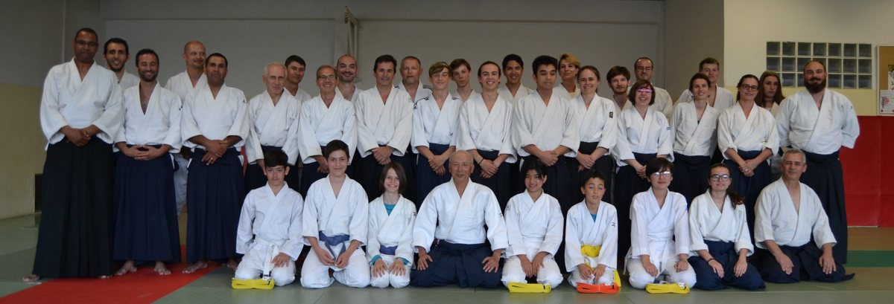
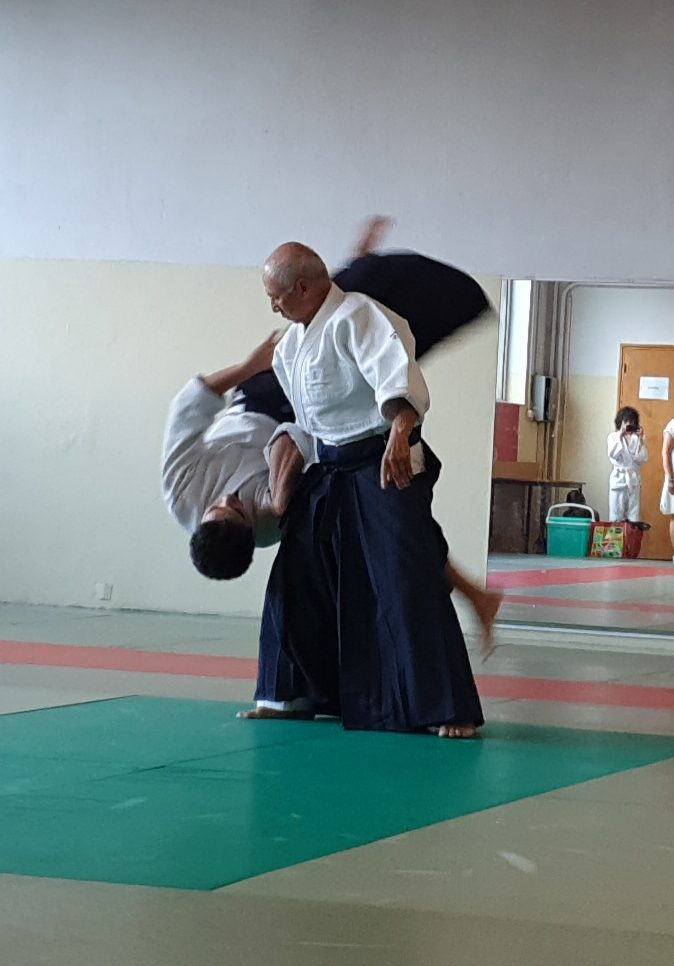

Touchez pour agrandirAïkido – Aikikai de Grasse
Un art martial japonais traditionnel, sans compétition, ouvert aux enfants et aux adultes de tout âge.
Une école de respect et d'harmonie
L'Aïkido met en pratique une philosophie humaniste et universelle : transformer une situation d'agression en une situation de paix et d'harmonie.
Le club est dirigé par Robert Tan, professeur diplômé d'État, qui enseigne à Grasse depuis 1993 et pratique régulièrement à l'Aikikai de Tokyo.
- Cours enfants (6 à 12 ans) et adultes
- Tous niveaux, débutants bienvenus
- Aucune compétition

L'histoire
Fondé par O Sensei Morihei Ueshiba, l'Aïkido est un art de paix accessible à tous.
Découvrir →L'enseignant
Robert Tan Sensei, professeur d'Aïkido diplômé d'État BEES 1er degré, ceinture noire 3e Dan, élève du Maître Masatoshi Yasuno Shihan (8e Dan) à Tokyo.
Le rencontrer →Photos et vidéo
Démonstrations d'Aïkido, stages et les cours d'entraînement au dojo.
Voir les médias →Cours d'essai gratuit, prêt de kimono
Venez essayer sans engagement. Le dojo est au 1er étage de la salle omnisports, face à l'espace Chiris.